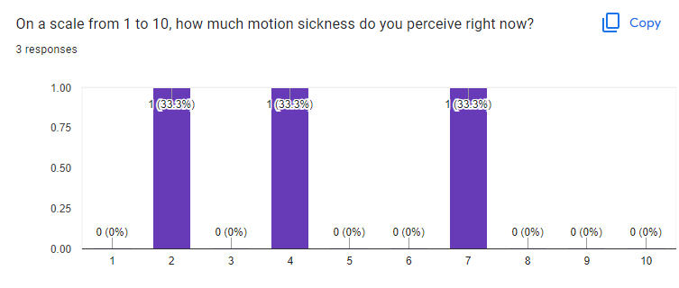
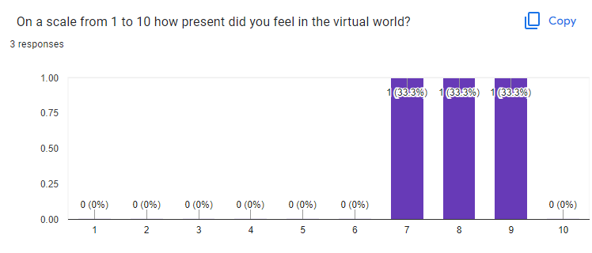
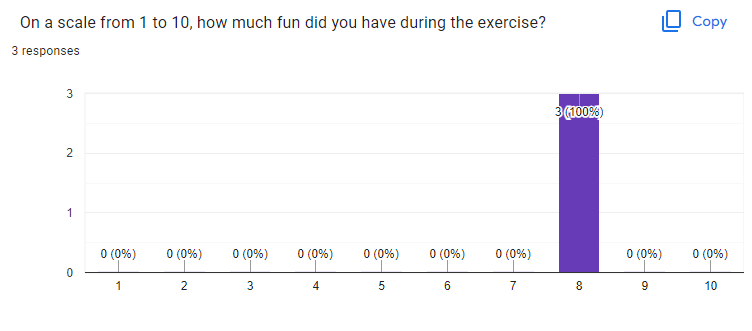
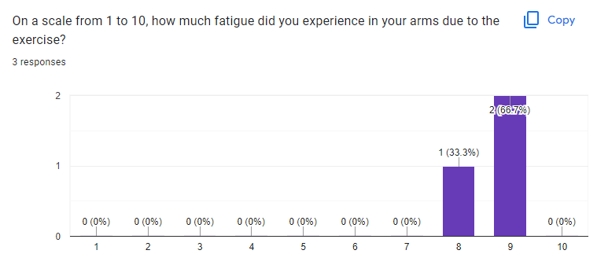

6. Evaluation
Goals of the evaluation
In order to evaluate the kayaking experience I wanted to answer a few questions:
- Were the players satisfied with the experience?
- Would the players be able to complete the parkour?
- Would the experience achieve its goal of acting as an exercise?
- Would players experience motion sickness?
This was done by having the player fill out a questionnaire after playing the game and recording the time it took for the player to complete the parkour as well as the number of coins they collected along the way.
Evaluation Setup
The evaluation was done by having the players play the game on a computer with a VR headset. They were given a two-minute warm-up period to get used to the controls. They were then given a ten-minute period to play the game as they saw fit. While they were not told to go as fast as possible they were informed that their completion time would be recorded. After the ten minutes were up they were asked to fill out a questionnaire.
Questionnaire
The questionnaire was composed of four questions:
- On a scale from 1 to 10, how much motion sickness do you perceive right now?
- On a scale from 1 to 10, how present did you feel in the virtual world?
- On a scale from 1 to 10, how much fun did you have during the exercise?
- On a scale from 1 to 10, how much fatigue did you experience in your arms due to the exercise?
Results
Three people participated in the evaluation.
One user developed the application while the other two were playing the game for the first time. Because of this, the results are not statistically significant.
Questionnaire
On a scale from 1 to 10, how much motion sickness do you perceive right now?
One of the participants reported high motion sickness, they requested that the maximum speed be reduced after some minutes of playing. After the speed was reduced they were able to complete the parkour. The other two participants reported no significant motion sickness.
On a scale from 1 to 10, how present did you feel in the virtual world?
On a scale from 1 to 10, how much fun did you have during the exercise?
All users reported a high presence in the game world and reported that they had fun playing the game.
On a scale from 1 to 10, how much fatigue did you experience in your arms due to the exercise?
All users reported that they experienced fatigue in their arms after playing the game. One user noted that the addition of weights would make the experience very exhausting.
The exact results can be seen in the images below.
Completion Time and Coins
The completion time and the number of completions of the parkour were recorded for each participant. The first-time users completed the parkour only once in the ten minutes they were given. The experienced user completed the parkour three times in the ten minutes they were given.
| User 1 | User 2 | User 3 | |
|---|---|---|---|
| Avg. Completion Time(in s) | 501 | 413 | 193 |
| Avg. No. of Coins | 30 | 57 | 37 |
Conclusion
The results of the evaluation show that the experience was fun and that the players were able to complete the parkour. The results also show that the experience was able to act as an exercise.
Questionnaire Results
   